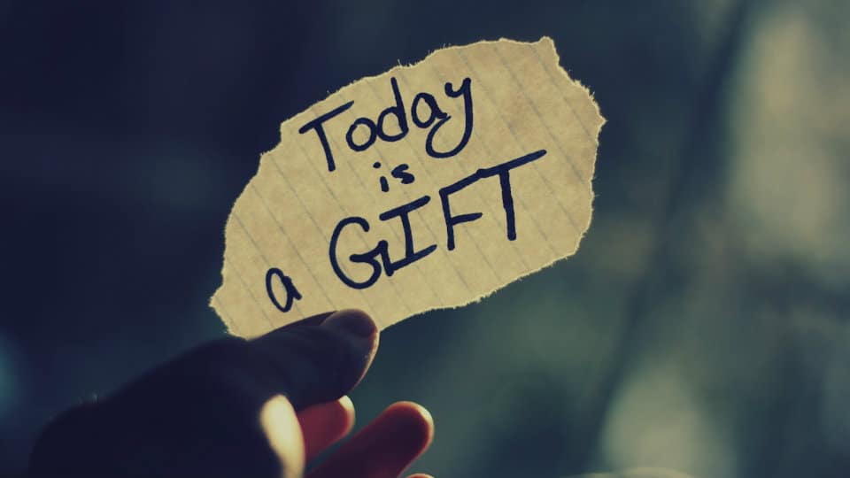

"Truth is the beginning of knowledge" -Aristotle
Life is often filled with distractions, regrets about the past, and anxieties about the future. Yet, the essence of living lies in the present moment, an opportunity that many overlook in their preoccupation with what has already happened or what might come to pass. By embracing the present, we can find fulfillment and purpose, instead of wasting precious time.
"The best time to plant a tree was 20 years ago. The second best time is now." This wisdom highlights the importance of seizing the present moment. If we constantly lament that we didn’t start sooner, we rob ourselves of the chance to act now. While we cannot change the past, we can take meaningful steps today that shape our future. Planting a tree, whether metaphorically or literally, represents taking action and making decisions that will bear fruit in the years to come. Rather than dwelling on the lost opportunity of planting it 20 years ago, this proverb reminds us to embrace the present and make the most of what we have now.
“Yesterday is history, tomorrow is a mystery, but today is a gift—that’s why they call it the present,” This saying reminds us that we have no control over what has already happened or what might unfold. The past is unchangeable, a history that has already been written. The future, on the other hand, is uncertain; we may make plans, but there are no guarantees about what tomorrow will bring. What we do have, however, is today—a day that we can use to create, connect, and grow.
Too often, people postpone their dreams and aspirations, waiting for the “right time” to start living. Yet, the right time rarely arrives, and those who wait may find themselves looking back with regret. The only time we truly possess is now, and by recognizing it as a gift, we can approach each day with purpose. If we waste today by being overly consumed with regret or anxiety, we miss the very opportunity to live fully.
The temptation to worry about the future or regret the past can be overwhelming. But neither worry nor regret contributes to a life well-lived. Instead, what adds value to our lives is our engagement with the present. When we are mindful of the moment, we become more aware of life’s details and can cultivate a sense of gratitude for what we have right now. This focus on the present doesn’t mean ignoring our responsibilities or never planning for the future; rather, it’s a commitment to not letting those concerns rob us of today’s joy.
By learning to value the present, we also learn to value ourselves and the people around us. It means showing up for each moment with intention and being fully present in our relationships, work, and personal pursuits. When we dedicate ourselves to the now, we not only enrich our own lives but also impact those around us positively. Life’s most meaningful moments often occur in the present—whether it’s a heartfelt conversation, an act of kindness, or simply being there for someone who needs us.
In conclusion, the present moment is indeed our most valuable gift, and we must not squander it. Now is the time to act, to live, and to be grateful. Rather than postponing life or dwelling on past mistakes, we can choose to embrace today fully, making the most of each moment. By doing so, we honor the gift of the present and ensure that we live a life without regrets.
Thanks for taking the time to read this and any thoughts or feedback can be submitted at thee33xp@proton.me